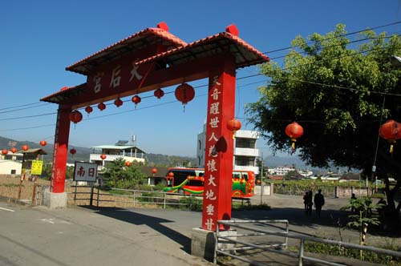

埔里早期被稱為「水沙連內山」，範圍涵蓋現在的埔里、國姓、仁愛、水里、魚池等地。 早期原住民族埔里社原稱「蛤美蘭社」，以眉溪為界，北方為眉社，南方為蛤美蘭社。
1815 年發生「郭百年事件」，漢人以武力進入埔里掠奪土地，造成埔里社族人傷亡、人口大減。 後來埔里社人邀請西部平原的平埔族群進入埔里共同開墾。道光年間，巴布薩、道卡斯、拍瀑拉、巴宰、噶哈巫等平埔族群陸續移入， 並以原鄉地名建立聚落，如大肚城、烏牛欄、阿里史、房里、日南等。到了 1850 年前後，埔里盆地的開發大致完成。
清代後期「牡丹社事件」後，清廷推行「開山撫番」，漢人開始陸續進入內山。 總兵吳光亮興建「大埔城」時，埔里周邊已有許多由早期平埔族群建立的聚落。
西元 1860 年，大甲附近的日南社，由 林阿蓮 率領族人遷居埔里。 他們原本是台灣西部的 道卡斯平埔族人， 由於嚮往埔里這塊地土壤肥沃、氣候溫和、宜居宜農，是繁衍後代子孫的好地方， 因此鳩集眾人冒險前來墾荒開拓新生活。
移居的路途既遙遠且充滿危險，尤其原住民「出草」的威脅， 更是這些拓荒者一直揮之不去的夢魘。
媽祖自古以來就是慈悲救苦救難的化身， 也是人們心目中最大的精神支柱，因此恭請媽祖隨行護佑就是行程平安順利最大的保證與靠山。
埔里天后宮的天上聖母，就是這樣由 海神變成山神。 一百多年前，祂庇佑族人一路安全的抵達目的地；隨後在醫藥不發達的年代， 又兼顧族人的健康及化解種種世間凡人的煩惱事。
也因為 有求必應，深獲信徒的景仰， 而激發了 一定要為祂蓋一間廟宇 的心願。 就這樣，埔里天后宮 在 民國 81 年（1992 年） 從日南庄的田間矗立起來了。
民國 81 年
一樓聖母殿落成民國 85 年
二樓玉皇殿落成從日南庄的田間到今日巍峨的廟宇，媽祖的慈光始終照耀著埔里這片土地， 見證了道卡斯族人遷徙開墾的艱辛，也守護著世世代代的居民。
建廟時原本準備三塊木頭雕刻三尊神像，後來透過 扶鸞 請示後， 將木料雕成兩尊三尺高的媽祖金身，以及「五龍護珠」座墊、蓮花座和太師椅， 並將原有的八寸媽祖金身安奉在中央。如此一來，原本較小的媽祖金身也顯得格外尊貴。
三尺媽祖金身
兩尊威嚴莊重五龍護珠座墊
精雕細琢蓮花座 · 太師椅
典雅莊嚴透過扶鸞的指示，讓神尊的雕刻有了更深的意義，也讓媽祖的信仰更加貼近信眾的心。
埔里天后宮矗立於埔里台地，守護著這片土地與居民。 從水沙連內山的開墾歲月，到道卡斯族人遷徙開拓， 再到今日的信仰中心，天上聖母的慈光始終照耀著每一位虔誠的信徒。 願 媽祖 護佑鄉親，風調雨順，國泰民安。